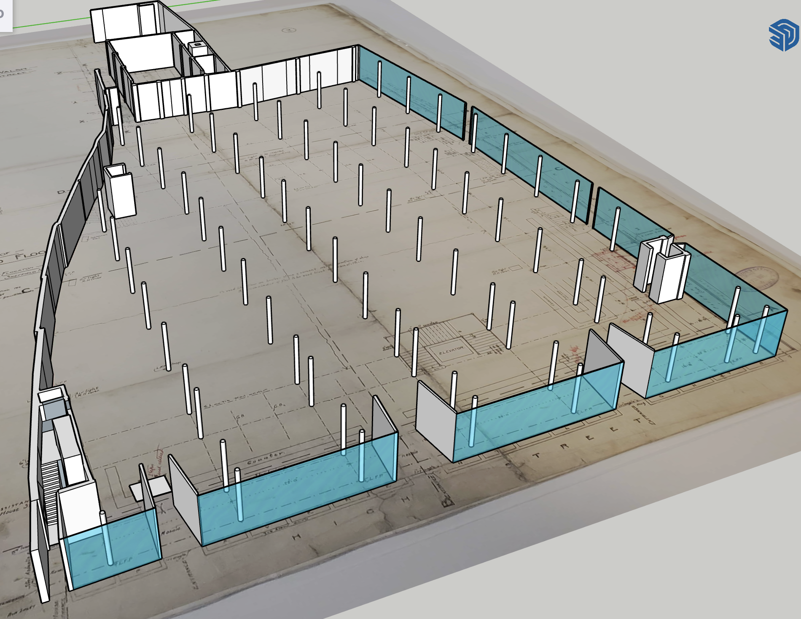

This version of the 1899 John Walsh store was built in 2024-25 as part of the Cultural Heritage Informatics (now Computational Cultural Heritage) Fellowship. The model was built in SketchUp with plans from the Sheffield City Archives.

This is a view of the ground floor with the architectural plan below. The main structures (walls and support columns) are the key components of the model. The front and side use a glass material to show the presence of plate glass display windows. Separated from the rest of the model, individual floor models like this, show the openness of sales floors.